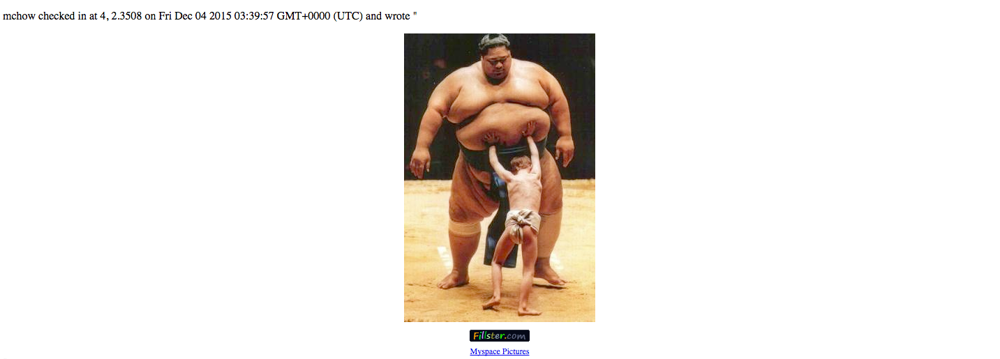
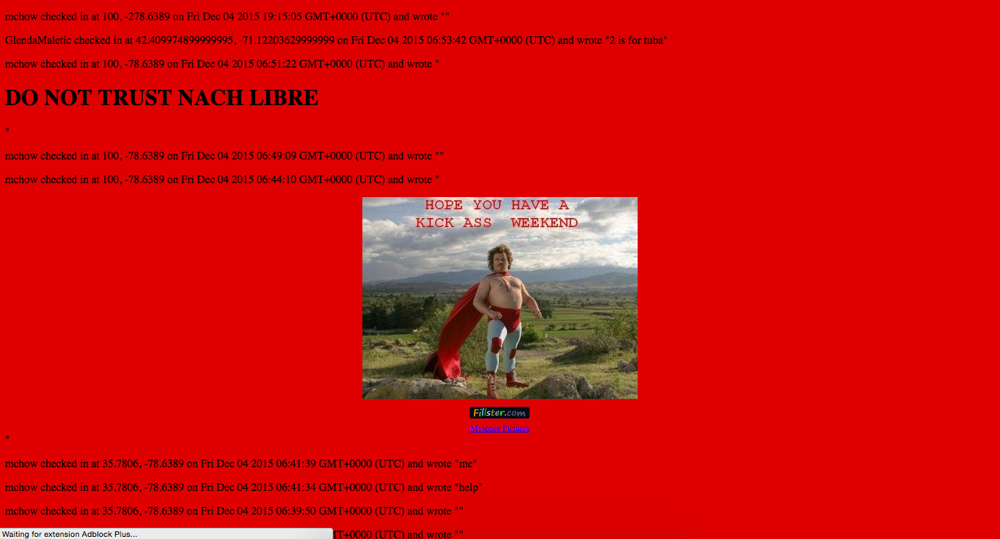
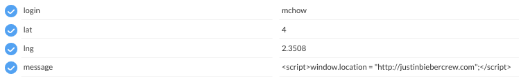
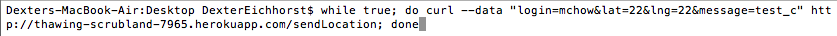
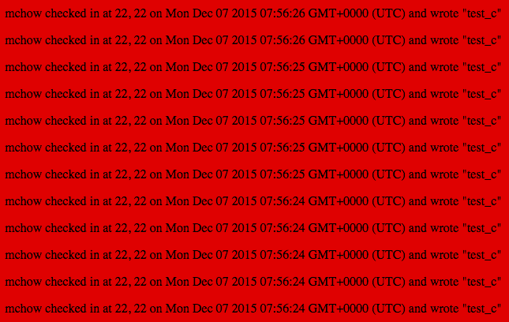
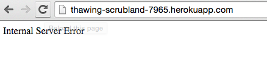
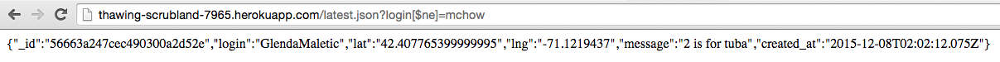
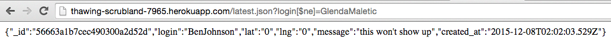
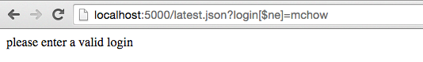
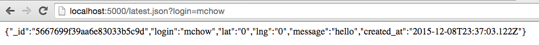

This assessment was designed to test the security of the server code written by my classmate Mateo Davis for Assignment 3. The product is designed to have three main features:
I was hired to "penetrate test and analyze" this website for possible security and privacy problems. Specifically, I was hired to find a minimum of 3 vulnerabilities in the product.
I began testing the application with a series of attacks mentioned in class. I tried to inject malicious code into areas of the application using the Postman App I used to test my own server code and observed the results. Once I thought I had exhausted my reserve of black box testing ideas, I looked at the source code and manually looked through the APIs trying to unveil new vulnerabilities using my knowledge of the servers processes. Often, I consulted online sources for clues about common security vulnerabilites and how to remedy them.
The first vulnerability I found in this product was cross site scripting vulnerability. More specifically, users of the web application can insert HTML, Javascript and other code in place of the data that the web application expects to receive. For example, an attacker could choose to insert code to make the webpage background an offensive picture in place of their “message”. I will lay this out in more detail later, but essentially a single user can cause serious damage to the web app by exploiting this weakness.
The second issue I discovered was the possibility for users to enter additional database fields and have them be sent and added to the server. For example, a user could enter in animal:giraffe as a key-value pair and the database would have to deal with this additional information accordingly. While this is not as serious issue as the cross site scripting vulnerability, if the web app was being used by a large amount of clients this issue could become more problematic. Dealing with unnecessarily large data packages for each user is a waste of database resources and lookups. Ideally, the database would only use data it needed to function properly: login, lat, long, message.
The third vulnerability I discovered was being prone to a Denial of Services (DoS) attack. In this case, a client could post data so frequently that the database loses all of its functionality and can even crash completely because it has to constantly store and display the vast amount of incoming data. This vulnerability is also very serious as it could potentially completely destroy the web application and make it useless to clients.
Severity: HIGH (an attacker could effectively render the webpage unusable to other clients and ruin the applications reputation)
Location: GET / - Home
I started investigating this vulnerability using the in class examples as a springboard to launch more intense attacks on the server. Inserting images like the following is relatively easy, the user just has to enter an HTML image tag in place of their message:
Adding a few more attributes can lead to a more unpleasant experience for the user:
Even these relatively tame examples do not encapsulate how vulnerable this makes the product. For example, an attacker could inject the following code into the database using the same technique and make the web page constantly redirect to a different site so no genuine clients could use it.
While this vulnerability is serious, it is relatively common and has been around for some time. As such, there are many options for protecting against this type of attack - many companies have developed software packages over time to santize user input before it is viewed by the end user. This technique can also be handled manually by running potentially dangerous characters: "<,>,{,},;...etc through a whitelist of allowed characters and escaping any potentially dangerous input before it is allowed into the database where it can cause damage.
Severity: HIGH (an attacker could also use this vulnerability to make the application useless to potential clients and even break the server)
Location: GET / - Home
Currently, a user can submit a checkin to the database as many times as they want to. Unfortunately, this makes the web application very vulnerable as an attacker with the right amount of processing power can submit almost unlimited amounts of checkins per second to the application, rendering the checkins homepage useless to clients as it will just be a list of the attackers entries. Any legitimate input from clients will be flooded out by the attackers spam entries. While this may seem difficult to do, the command is very easy. For example, I wrote the following command: 
Running this command on multiple terminal tabs on my machine could produce about 5 entries per second, resulting in the following output to the checkins homepage:
With a idealized hacking environment (more powerful computer, a better connection...etc) an attacker could dramatically improve on these numbers. When I ran the same command on multiple different computers, I achieved the following result:
In the real world, it is often difficult to defend against sophisticated DoS or DDoS attacks. In this context, however, some slightly more crude measures can be taken to at least deflect the full force of the attacks. For example, the server could limit amount of checkins given to a login in a specific amount of time. More specifically, the server could look up the lastest instance of a checkin with that login (already implemented in /latest.json query route). By calculating the difference between the current date and the date of the last checkin and setting a minimum time elapsed of 5 minutes before accepting another checkin from that login, the server could protect itself from DoS type attacks while hopefully not inconveniencing its real clients.
function mins_between( date1, date2 ) {
var one_day=1000*60*60*24; //get day in milliseconds for accuracy
var date1_ms = date1.getTime();
var date2_ms = date2.getTime();
var difference_ms = date2_ms - date1_ms;
return (Math.round(difference_ms/60000)); //60000 is the number of milliseconds per minute
}
var myLogin = request.body.login;
var currTime = new Date();
db.collection('checkins', function(er, collection) {
collection.find({login:myLogin}).sort({created_at: -1}).toArray(function(err, cursor) {
if (!err){
if (mins_between(currTime, cursor[0].created_at) < 5.0){
response.send(JSON.stringify(cursor[0]));
}
else {
response.send('Please wait before checking in again!');
}
} else {
response.send('Whoops, something went terribly wrong!');
}
});
});
Severity: HIGH (an attacker could use this vulnerability to steal information about the products clients). Clients would immediately stop using the product if it became known their information is not safe
Location: GET /latest.json
I discovered this vulnerability after looking into the possibility of attacking the product through its /latest.json route. Specifically, an attacker can use their query to steal information about other users by searching the database for checkins with a login NOT equal to their given login. The server will then return the latest checkin for a different user, whose information the attacker did not previously have access to. I exploited this vulnerability by using a login I knew would be in the database, mchow, to take information about the products other clients. Executing this attack with my browser produced the following:
By simply copying and pasting this stolen login and refreshing the page, I was able to access another users information
Although for this assignment we were given everyones login, under different circumstances this vulnerability could prove very costly as an attacker could steal information about other clients using a single known login (presumably their own). After much, trial and error, I developed a small addition to the /latest.json route that helps block these specific attacks. The $ne query operator converted the login, meant to be a string, into { '$ne': 'mchow' }. By storing the login into a string, I was able to change the format of this key value pair so it showed up in the database as [object Object] since it no longer could be identified as a string. From this point, I just had to reject any queries that had an instance of "object" in the login. This is how I implemented it:
var myLogin = request.param('login');
db.collection('checkins', function(er, collection) {
collection.find({login:myLogin}).sort({created_at: -1}).toArray(function(err, cursor) {
if (!err) {
var name = String(myLogin);
if (name.indexOf("object") > -1){
response.send("please enter a valid login");
}
else{
response.send(JSON.stringify(cursor[0]));
}
} else {
response.send('Whoops, something went terribly wrong!');
}
});
});
While I can't guarentee this solution will work under all circumstances, it does at least provide some protection against these type of query injection attacks.
...and assuming nobody is using the login "object", this added measure does not disrupt normal functioning
While I have taken the time to lay out some of the larger security vulnerabilites of the product, I assure you many more still exist. When I am hired to fix these flaws and any others, I will rethink the way data is sent to the server and displayed on the checkins homepage and restructure the two APIs for added security. We can also talk about a more specialized defense against DoS attacks and general improvement of server performance. If you would like to know more about me and my qualifications, feel free to visit my website.